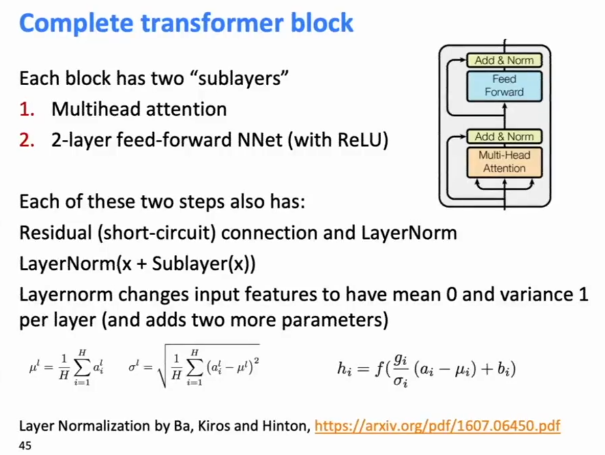

Inputs: A query
Ourput is weighted sum of values, where the weight of each value is computed by a dot product of query and corresopnding key, and looking up the weighting for each corresponding value. Queries and keys have the same dimensionality
In matrix form, this is

The attention score is the weighted sum of the values weighted by the attention score, which squashes all the individula reprenstations into one. Scaled Dot-Product Attention
Problem: As
Solution: Scale by length of query/key vectors: (Pic in Appendix 4)
Self-Attention in the Encoder
In the encoder, everything in the attention input is our word vectors: the queries, keys and values are all our word vectors. In other words, the word vectors themselves select each other.
We’ll see in the decoder why we separate them in the definition.
Multi-head Attention
Problem with simple self-attention: Only one way for words to interact with one another. Maybe we wnat multiple types of attention, some to capture syntax, some semantics, some other dependencies.
Solution: Multi-head attention
First map Q, K, V into h=8 many lower dimensional spaces via W matrices. Then apply attention, then concatenate ourputs and pipe through linear layer. (Picture in Appendix 4)
The multi-head attention was one of the successful innovations that made the transformer a successful architecture.
Complete Transformer Block

There’s no free lunch. You now no longer have recurrent informaiton carried along a sequence. You’ve got a word at some position which can be casting attention on other words, so if you like to have information carried along the chain, you ahve to walk the first step of the chain, and then you need to have another lauer that walks another step of the chain. So you’re getting rid of the recurrence but you’re substituting some depth to allow thigns to walk along multiple hops. But nevertheless, that is highly advantageous in GPU architectures which can compute everything at once.
Positional Encoding
Note that their actual word representaitons are byte-pair encodings.
The positional sinusoids are indices in sinusoids that are moving at different speeds, so that close by positions would have very similar values for the multiple sinusoids.

Complete Transformer Encoder

Interpretation: At each stage you can look with multi-headed attention at various places in the sentence, accumulate information, push it up to the next layer, and if you do that 6 times, you can be starting to progressively push information along the sequence in either direction to calculate values that are of interest.
The attention heads attend to each other in interprable ways, and can correspond to modifiers of the word, close by words, or anaphora resolution. (Appendix 6)
Transformer Decoder

Each decoder state self-attends with all of its fellow decoder states as well as with all the encoder states.
Transformer Model
Inspired PixelCNN.
RNN doesnt have an explicit way to model hierearchy which is very important in language.
Inspiration: Recursive self-attention: Convolutional Neural Networks
Long-distance dependencies require many layers
- Get a constant ‘path-length’ between any two positions.
- You get gating/multiplicative interactions just by virtue of attention having a softmax at the end.